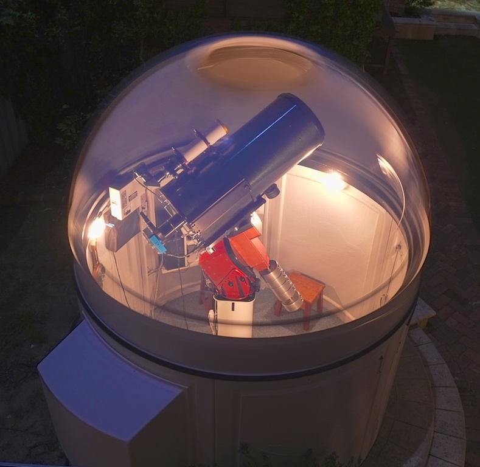

Skip to content
Shenton Park Observatory
Home
Research & Results
Journal archive
Images archive
← Journal archive
D21 gets an upgrade ...
05 September 2012
· Uncategorized
The new 14" Ritchey-Chrétien.

Previous
← Imaging satellites
Next
Our home star, Sol. →
×